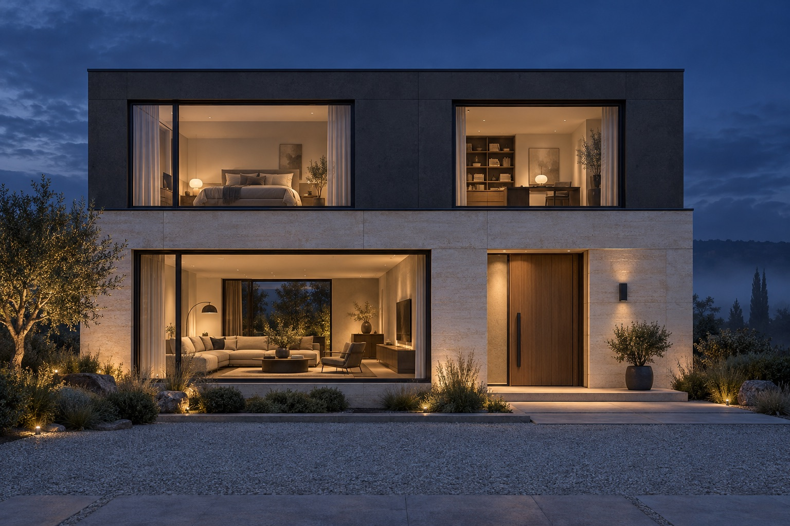

LICHT & SICHTSCHUTZ
Guten Morgen, Sonne.
Guten Abend, Privatsphäre.
Rollläden nach Ihrem Rhythmus. Oder genau dann, wenn Sie es möchten.
Geschlossen

STÖHR SMART HOME SOLUTIONS
Es begrüßt Sie. Denkt mit. Macht den Alltag leichter.
Ihr Zuhause neu erleben ↓
EIN HAUS. EIN TAG. EIN NEUES GEFÜHL.
01 / 05VORHER → NACHHER
Ihr Zuhause bleibt Ihr Zuhause. Nur die Handgriffe werden weniger. Scrollen Sie und erleben Sie den Unterschied.
Wunschtemperatur angepasst ✓
TECHNIK IM HINTERGRUND. LEBEN IM VORDERGRUND.
Mehr Komfort. Bewusster Energie nutzen. Mit einem guten Gefühl unterwegs sein. Wir planen die Technik um Ihren Alltag herum.
NICHT NUR ANSEHEN. AUSPROBIEREN.
LICHT & SICHTSCHUTZ
Rollläden nach Ihrem Rhythmus. Oder genau dann, wenn Sie es möchten.
ANKOMMEN & WOHLFÜHLEN
Ein passender Sensor erkennt Bewegung am Eingang und schaltet das Licht ein.
WÄRME. VON ÜBERALL.
Stellen Sie Ihre Wunschtemperatur ein, bevor Sie ankommen. Mit einer passenden Lösung steuern Sie Ihre Heizung auch von unterwegs.
Angenehme Wärme für Ihren Feierabend.
Unterwegs verbunden
Ihr Smartphone. Ihr Zuhause. Eine Verbindung.
ZUGANG, DER ZU IHNEN PASST.
Mit einem passenden smarten Türschloss öffnen Sie per berechtigtem Smartphone, Code oder Fingerabdruck — je nach System.
Demo: Tür verriegelt.
VON DER IDEE ZUM ALLTAG.
In einer kostenlosen, unverbindlichen Erstberatung geht es um Ihr Zuhause und die Dinge, die Ihren Alltag leichter machen.
Wir besprechen Möglichkeiten, Geräte und Umfang. Sie wissen, was die Lösung leisten soll und welche Schritte folgen.
Die vereinbarte Technik wird eingerichtet und verständlich erklärt. Mit persönlichem Ansprechpartner vor Ort.
Die gezeigten Funktionen sind Beispielszenen. Welche Lösung bei Ihnen möglich ist, klären wir anhand Ihrer Geräte, Türen, Rollläden und Wohnsituation.
IHR ZUHAUSE IST DER ANFANG.
Wählen Sie Ihre Wünsche. Und den Kontaktweg, der zu Ihnen passt.